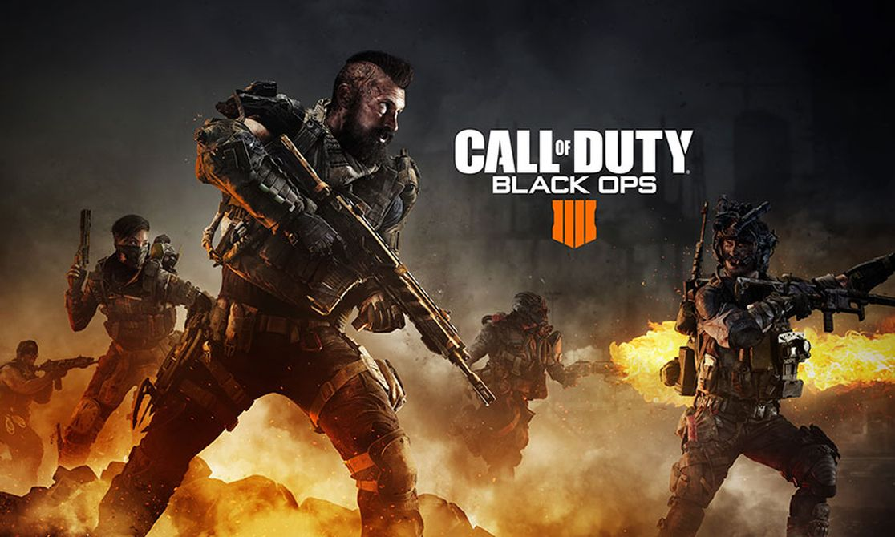
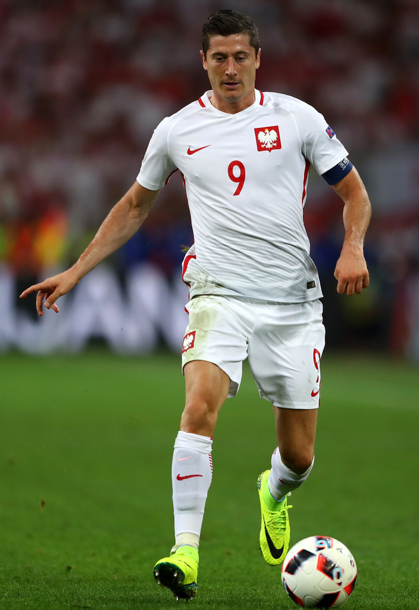
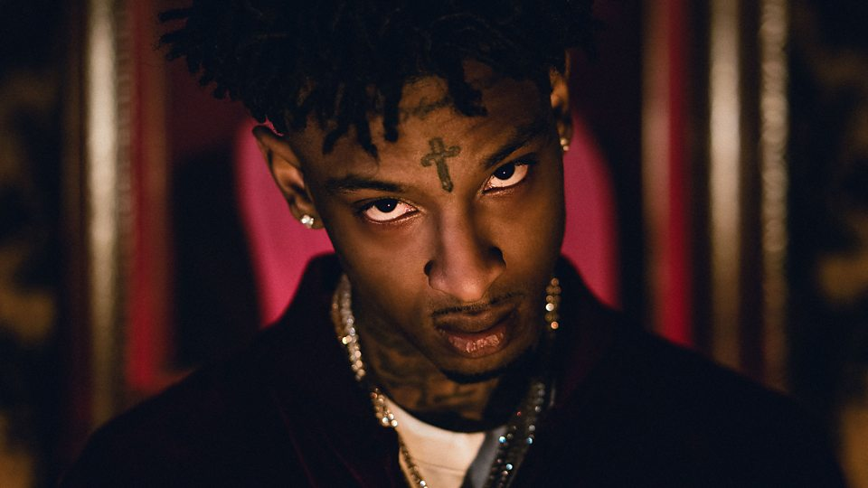

Call of duty®: black ops 4 is an vidéo games that includes ultra-realistic and fluid multiplayer ground battles, the largest ever known zombie mode offering with three full adventures available as soon as it's released, as well as blackout, where the black ops universe comes to life within of a colossal Royal battle. Black Ops 4 will be the strongest, most refined and customizable call of duty® experience to date, with 4K resolution, HDR technology, compatibility with ultra-wide displays and additional features designed for PC players.
Kobe Bean Bryant (born August 23, 1978 in Philadelphia, Pennsylvania) is an American professional basketball player who played in the NBA franchise of the Los Angeles Lakers for twenty seasons between 1996 and 2016. Quintuple NBA Champion, he is one of seven players to have scored over 30 000 points in career.Selected in 13th place in the NBA draft 1996 by the Charlotte Hornets, when he was a high school student, he was immediately transferred to the Los Angeles Lakers. After several seasons of apprenticeship in the NBA, he formed with Shaquille O'Neal one of the most dominant duos in the history of the NBA, realizing a historical triplet in 2000, 2001 and 2002.

The Real Madrid Club of Fútbol, better known as Real Madrid (often reduced to real or, Spain, El Madrid) is a professional Spanish football club based in Madrid. Winner of numerous national and international titles, he has received the honorary title of the largest Club of the twentieth century from the Federation Internationale de Football Association (FIFA). Founded in 1902 by Julián Palacios and the brothers Juan y Carlos Padrós the Club is awarded the title real (meaning "Royal" in Spanish) by King Alfonso XIII of Spain in 1920. Real Madrid is at the top of European football in the mid-1950, under the chairmanship of Santiago Bernabéu, winning in particular the first five editions of the European Cup of Champions clubs.

Robert Lewandowski (born 21 August 1988 in Warsaw, Poland) is a retired Polish footballer who plays for the polish international club. He currently plays as a striker at Bayern Munich, in the German Championship, and in Polish selection. It is considered one of the best avant-centres in the world, especially thanks to its formidable complete game in the opposing repair surfaces. Formed in Varsovia Warsaw and then in two other clubs in the capital, Robert Lewandowski was spotted in the second Polish Division by the recruiters of Lech Poznań, while playing at Znicz Pruszków. After joining Poznań in the summer of 2008, he immediately took on an international scale, playing his first game in selection a few months later. In two seasons, he won three trophies including a Championship, and played about fifteen European matches.
1 Savage, of his real name Sha yaa bin Abraham-Joseph, born on 22 October 1992 in London, is a British rapper. He gained popularity in 2016 with the title red opps, and became world famous with his single no heart cumulating more than 100 million views on YouTube in a few months.
